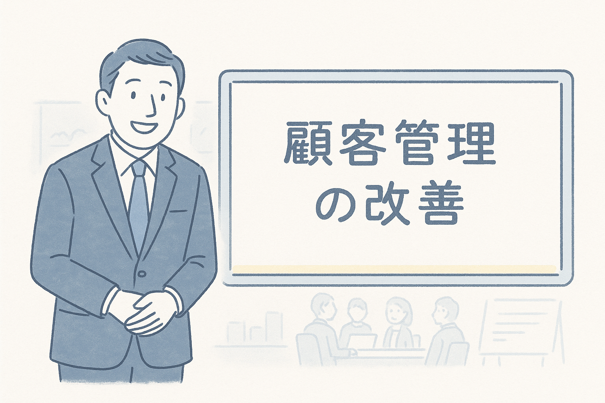
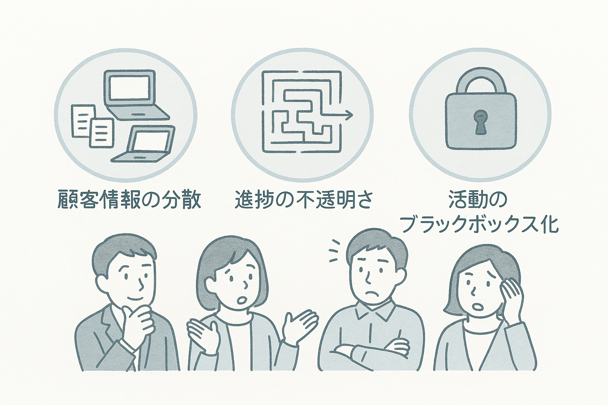
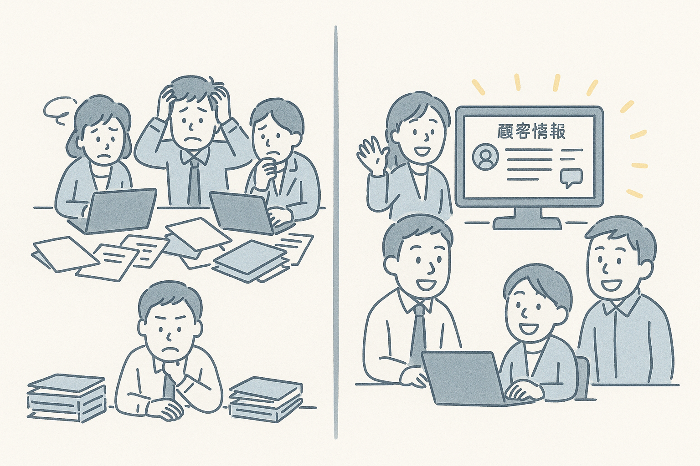
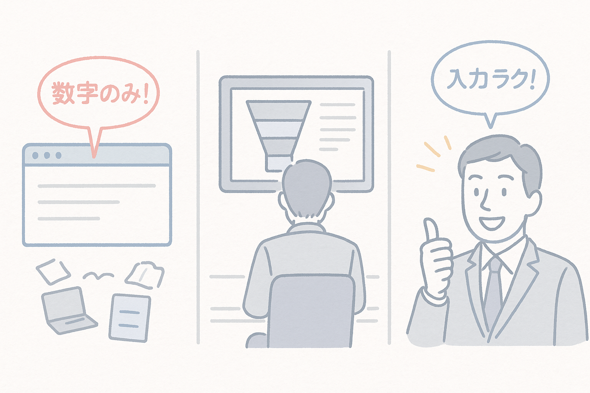

①導入

このスライドでは、Salesforce導入の背景と目的について説明します。
顧客管理の重要性と現状の課題を簡単に紹介しましょう。
②現状課題

現状の顧客管理における課題点を詳細に説明します。
特に、データの分散、情報共有の難しさ、レポート作成の手間などを強調しましょう。
③Salesforce導入コンセプト
Salesforceの導入コンセプトについて説明します。
顧客中心のビジネスプロセス実現とデータ統合の効果について触れましょう。
④重複チェック

Salesforceの重複チェック機能について詳しく説明します。
データ品質向上のメリットと、実際の運用例を紹介しましょう。
⑤レポート

Salesforceのレポート機能とダッシュボード機能について説明します。
データ分析の容易さとリアルタイム性について強調しましょう。
⑥まとめと未来像
Salesforce導入の効果のまとめと将来展望について説明します。
質疑応答の時間を取り、導入後のサポート体制についても触れましょう。